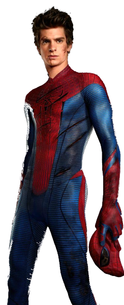
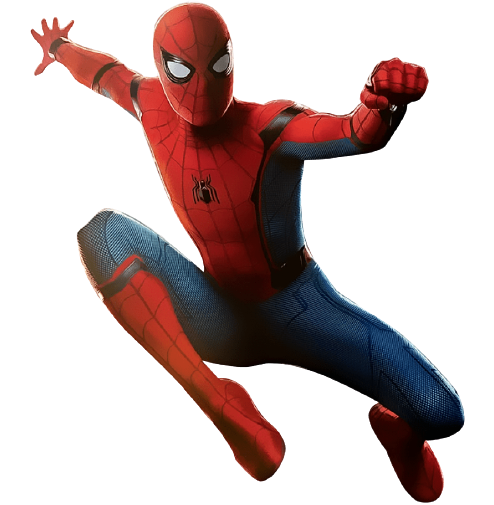

Peter Parker (Tobey Maguire) em uma excursão visita um laboratório de genética a exposição de aranhas de
15 espécies junto com seu amigo Harry Osborn (James Franco) e seu interesse amoroso, Mary Jane Watson
(Kirsten Dunst). Lá, Peter é picado por uma aranha geneticamente modificada. Depois de chegar a casa de
seu Tio Ben (Cliff Robertson) e sua Tia May (Rosemary Harris), ele acaba inconsciente. Enquanto isso, o
pai de Harry, o cientista Norman Osborn (Willem Dafoe), está tentando preservar um contrato militar de
importância crucial para sua empresa a Oscorp. Ele testa uma fórmula ampliadora de desempenho em si
mesmo, porém, acaba ficando insano e mata seu assistente, Mendel Stromm (Ron Perkins). Na manhã
seguinte, Peter descobre que sua visão melhorou, e seu corpo se metamorfoseou em um físico mais
musculoso. Na escola, ele descobre que pode produzir teias, e ganha um sentido de aranha, que o salva de
ser esmurrado pelo valentão da escola, Flash Thompson (Joe Manganiello), e termina por mandar o mesmo ao
chão com um único soco, impressionando seus colegas.
Jogando fora o conselho de seu tio Ben, de que "com grandes poderes vêm grandes responsabilidades",
Peter entra em um torneio de luta livre para ganhar dinheiro e comprar um carro, para impressionar Mary
Jane, adotando o nome de "Aranha Humana", onde o locutor do ringue se engana ao pronunciar, e lhe chama
de "Homem Aranha". Ele vence a luta diante do adversário de nome "Serra Osso", assim acabando sendo
enganado. Quando o ladrão Denis Carradine rouba o dinheiro do promotor, Peter deixa o ladrão fugir. Mais
tarde, ele descobre que seu tio Ben foi assassinado a tiros, possivelmente pelo mesmo assaltante. Peter
confronta o assaltante, apenas para descobrir que era o mesmo ladrão que ele deixou fugir. Depois de
Peter desarmá-lo, ele cai de uma janela e morre. Enquanto isso, Norman mata vários cientistas e alguns
militares do General Slocum.
Ao se formar, Peter começa a lutar contra o crime, criando um traje e apelidando-se de Homem-Aranha. O
editor do Clarim Diário, J. Jonah Jameson (J. K. Simmons), contrata Peter como fotógrafo, já que Peter
foi o único que conseguiu fotos claras do Homem-Aranha.
Norman, ao tomar conhecimento de que os membros do conselho da Oscorp pretendem vender a sua empresa, os
mata durante o Festival da União Mundial. Jameson nomeia o misterioso assassino de Duende Verde. O
Duende oferece ao Homem-Aranha um lugar ao seu lado, mas ele recusa o convite. No jantar de Ação de
Graças, Norman deduz a verdadeira identidade do Homem-Aranha, devido o corte no braço feito por Duende
Verde. Posteriormente, o Duende Verde ataca e hospitaliza a Tia May.
Mary Jane admite que ela tem uma queda pelo Homem-Aranha, que a salvou em inúmeras ocasiões, e pergunta
a Peter se o Homem-Aranha já perguntou sobre ela. Harry, que ama Mary Jane, chega e a vê reunida com
Peter. Arrasado, Harry diz ao pai que Mary Jane ama Peter, sem querer revelando a maior fraqueza do
Homem-Aranha.
O Duende sequestra Mary Jane e um bonde cheio de crianças, e os mantém como reféns ao lado da ponte do
Queensboro. Ele obriga o Homem-Aranha a escolher quem ele quer salvar, e joga os dois da ponte. O
Homem-Aranha consegue salvar Mary Jane e o bonde, enquanto o Duende e bombardeado por civis. O duende
leva o aranha a um esconderijo abandonado, onde eles tem uma última batalha, onde Peter leva uma surra
do Duende, podendo se redimir depois, descobrindo que era Norman, pai de seu melhor amigo Harry.
Norman implora perdão a Peter, mas sua personalidade de Duende o incentiva a usar um controle remoto
para direcionar o planador para Peter. O herói evita o ataque dando um belíssimo pulo, mas o planador
acaba empalando Norman. Antes de morrer, Norman pede a Peter que não conte a Harry sobre o Duende Verde.
O Homem-Aranha leva o corpo de Norman a mansão, escondendo os equipamentos do Duende Verde, mas Harry
acaba chegando e vendo á cena de seu pai, agora falecido. No funeral de Norman, Harry jura vingança
contra o Homem-Aranha, e afirma que Peter é a única coisa que lhe resta, uma vez que agora é órfão. Mary
Jane confessa a Peter que é apaixonada por ele, mas ele sente que deve protege-la dos inimigos do
Homem-Aranha, e esconde seus verdadeiros sentimentos. Enquanto Peter deixa o funeral, ele se recorda das
palavras de Ben sobre a responsabilidade, e aceita sua vida de Homem-Aranha.
Spider Man do Andrew

this version of Peter Parker was born circa 1995 and had lived in New York City since his birth. At a young age, Peter Parker's parents are said to have died in a plane crash, leaving him to be raised by his Uncle Ben and Aunt May. Peter attended Midtown Science High School where he was an unpopular student, being bullied by jock Flash Thompson. Whilst on a school field trip he first met Gwen Stacy whom he fell in love with. On that same field trip Peter was bitten by a radioactive spider, which gave him enhanced agility, strength, speed, durability, a spider-sense, and the ability to crawl on walls. He then created web shooters for himself and donned a brand new costume, taking the name "Spider-Man", and chose to protect the city as a superhero for the greater good after the death of his beloved Uncle Ben.
He then met with Dr. Curt Connors, who was an old colleague of his father, and helped him to finish a serum, which Dr. Connors then would later use on himself, transforming him into a monster known as The Lizard. Deeming it to be his fault and responsibility, Peter makes it his duty as Spider-Man to stop the Lizard and save New York City.
Peter fought The Lizard twice, once in the sewers, while Spider-Man was testing out his camera and the Lizard attacked and tried to kill him, because he did not want the citizens of New York to know of his existence and again at Peter's school, after The Lizard found out that Peter was Spider-Man, he battled him through the hallways of the school while students evacuated, when it looked as though the Lizard was going to kill him, Gwen Stacy intervened and attacked The Lizard with a trophy. The Lizard left the school and went back beneath the waters and into the sewers.
Spider-Man versus the Lizard
Atop Oscorp Tower, The Lizard planned to use a reptilian DNA sample to infect the citizens of New York City with. Spider-Man arrived to stop what Connors was doing, but was stopped himself by The Lizard. The two faced off, resulting in the narrowest of victories for Spider-Man. As George Stacy held off The Lizard, Peter climbed to the device The Lizard was using and planned to install the healing DNA that Captain Stacy had given to him. Unfortunately, Stacy was seriously injured by the beast, as it had impaled Stacy in the chest. Spider-Man eventually stopped The Lizard and joined Captain Stacy for his last moments who made him promise to keep Gwen safe by not involving her with his life.
The Amazing Spider-Man 2
"“You know what it is I love about being Spider-Man? Everything!”"
―Spider-Man[src]
Spider-Man is seen in pursuit of criminals carrying a truck full of plutonium (dangerous radioactive chemicals) through the city. Whilst talking to Gwen Stacy on the phone, he sees a vision of her late father, Captain Stacy, and is reminded of the promise he made to stay away from Gwen. During the chase, he saves the life of a man named Max Dillon. Afterwards, Peter meets Gwen at their high school graduation ceremony where the two share a kiss. However, later in the evening, Peter tells Gwen about the visions he's been having and insists that he needs to keep his promise in which Gwen breaks up with Peter.
Upon hearing the news of Harry returning to New York City and the death of Norman Osborn, Peter Parker visits Harry and the two are reunited after ten years. Later that night, Peter meets Gwen in attempt to maintain a friendship, and Gwen tells Peter that an opportunity to Oxford University means she has to move to England. Before the two can discuss it, Max accidentally shuts off the power to Times Square whilst looking for electricity to power himself. Max is seen all over time square where he is actually seen. Spider-Man attempts to calm the situation down. Spider-Man then saves people from his destruction. As Electro is replaced by Spider-Man all over Times Square which Electro then thinks Spider-Man is nothing but selfish. But after the police try to snipe him, Max thinks that Spider-Man has betrayed him, Spider-Man tries to calm him down but fails and Electro, in rage, attacks. Spider-Man eventually stops him and he is taken to Oscorp to be tested on.
Harry begins to show symptoms of his illness and uses the device his father gave him to deduce that Spider-Man's blood could help save him. He asks Peter for help finding him but Peter refuses, unsure of what effects the transfusion would have, fearing another incident like with Connors. Parker visits Harry again, this time as Spider-Man, but again refuses. He then goes to Gwen Stacy and finds her then tells her about the situation and also gives her luck.
Peter uses information left behind by his father to locate the video message Richard left. In it, Richard explains that he had to leave New York because he wasn't willing to go along with Norman Osborn's plans to use what they had created for biological weapons with his research.
Spider-Man versus Electro
Peter then receives a voicemail message from Gwen, telling him that she was offered the job in England and was heading to the airport to fly there earlier than expected because of an earlier class. Peter manages to catch her and professes his love for her, and the two agree to go to England together. They are interrupted by a blackout caused by Electro. Peter takes Gwen down where the police are and Gwen helps him with his web-shooters to go against Electro. Peter heads off to fight with Electro having the upper-hand. As Electro has Spider-Man in the air and is electrocuting him, Gwen comes in a police car and hits Electro, against Peter's demands. The two plan to defeat Electro by overloading his electricity supply.
Just after they do so, Harry Osborn arrives, now as the Green Goblin , and figures out Spider-Man’s identity and that he wants revenge for being refused the life saving blood transfusion. Goblin takes Gwen and drops her where Spider-Man catches her. The two fight at the top of a clock tower, and Spider-Man manages to subdue the Goblin. However, during the fight, Gwen falls and is supported by a web connected to one of the gears. The gears gives way which causes to cut the web, and Gwen again falls. Goblin is then defeated and Peter tries to save Gwen using his web. As Peter webs to catch her, she hits her head on the floor dying instantly from the impact. Peter could only sit and weep in grief after Gwen's death.
Five months pass and Spider-Man is nowhere to be seen in New York, as Peter spends every day at Gwen's grave. Meanwhile, Harry Osborn is visited by an unknown identity who tells him that they have found a man suitable of operating a large suit of armor developed by Oscorp. The man is Alexsei Sytsevich - the criminal stopped by Spider-Man once before. He attacks the city streets in the mech-suit, going by the name The Rhino. Peter is inspired by a recording of Gwen's graduation speech and makes his return as Spider-Man to fight Rhino.
Post-The Amazing Spider-Man 2
After the death of Gwen Stacy, Peter struggled to move on and keep going as he started to inhabit violent qualities in his Spider-Man persona by not pulling back his punches and becoming more rageful as time went on.
Spider-Man: No Way Home
When an alternate Peter Parker botched the spell that Doctor Strange casted, Peter was transported to another universe, along with two of his foes he fought in the past.
Spider-Man got mainly involved when Ned was trying to find his Peter by using a Sling Ring in opening a portal. However, the portal opened at Spider-Man's location, with Ned and MJ calling him and made him go through the portal. Realizing he was not the Peter they were expecting, Ned's grandmother panicked while Ned and MJ confused. He removed his mask before telling Ned's grandmather that it is okay. MJ asked who he is, then introduced himself as a Spider-Man in a different world and confused as he was teleported to their universe. As he was mentioning about the String Theory, Multi-Dimensional reality, and Matter Displacement being real, Ned whispered to MJ that the reason for Spider-Man's situation is because of the spell. With Peter overhearing it, he chats with Ned a bit about magic being real but MJ halts the conversation. MJ asks to prove him that he is Peter Parker, but Peter answers by saying he doesn't have an I.D, since it kind of defeats the purpose of the anonymous superhero-thing. MJ throws a bread at him, while doing a fighting pose with Ned. Peter asks why did she do that. She said that it's for checking if he has the "tingle" thing for proof. As MJ is about to throw another bread, Peter said that not to throw it again and remarks her deeply mistrusting approach and respects it. After saying so, he sticked to the ceiling by one hand. MJ tells him to crawl around and Peter replies that why does he need to. MJ said that it's not enough and Peter says that it's plenty. Ned's grandmother requests in annoyance to Ned for Peter to put away the dust at the corners of the ceiling in Tagalog. Ned translates it for Peter then it finally made him crawl and put away the dust, with Ned's grandmother thanking him.
Spider Man do Tom

Spider-Man: Homecoming (bra: Homem-Aranha: De Volta ao Lar; prt: Homem-Aranha: Regresso a Casa) é um filme estadunidense de super-herói de 2017, baseado no personagem Homem Aranha da Marvel Comics, coproduzido pela Columbia Pictures e Marvel Studios e distribuído pela Sony Pictures Releasing. É o segundo reboot do Homem-Aranha no cinema e o décimo sexto filme do Universo Cinematográfico Marvel. O filme é dirigido por Jon Watts, com um roteiro de Jonathan Goldstein e John Francis Daley, Watts e Christopher Ford, e Chris McKenna e Erik Sommers. O elenco é composto por Tom Holland, Michael Keaton, Jon Favreau, Zendaya, Donald Glover, Jacob Batalon, Laura Harrier, Tony Revolori, Bokeem Woodbine, Tyne Daly, Marisa Tomei e Robert Downey Jr. Em Spider-Man: Homecoming, Peter Parker tenta equilibrar o herói Homem-Aranha com sua vida escolar enquanto ele enfrenta o Abutre.
Em fevereiro de 2015, a Marvel Studios e a Sony chegaram a um acordo para compartilhar os direitos de personagem do Homem-Aranha, integrando o personagem no estabelecido UCM. No mês de junho seguinte, Holland foi escolhido como personagem-título, enquanto Watts foi contratado para dirigir, seguido pouco depois pelo escalação de Tomei e a contratação de Goldstein e Daley para escrever o roteiro. Em abril de 2016, o título do filme foi revelado, juntamente com escalações adicionais, incluindo Downey. As filmagens começaram em junho de 2016 no Pinewood Atlanta Studios em Condado de Fayette, Geórgia e continuaram em Nova York antes de serem concluídas em Berlim no mês de outubro. Durante as filmagens, Watts, Christopher Ford, Erik Sommers e Chris McKenna foram revelados como roteiristas adicionais e outros membros do elenco foram confirmados.
Spider-Man: Homecoming estreou em Hollywood em 28 de junho de 2017, sendo lançado nos Estados Unidos em 7 julho de 2017 nos formatos convencional, 3D, IMAX e IMAX 3D. No Brasil e em Portugal, a estreia ocorreu em 6 de julho de 2017. Arrecadou mais de US$ 880 milhões mundialmente, tornando-se o segundo filme mais bem sucedido do Homem-Aranha, o sexto longa-metragem de maior bilheteria de 2017 no mercado interno, Estados Unidos e Canadá,[6] e o quinto de maior arrecadação pelo mundo.[7] O filme recebeu críticas positivas, destacando-se as performances do elenco, em especial Holland, o tom e as sequências de ação.
Enredo
Após a Batalha de Nova York em 2012,[N 1] Adrian Toomes e sua empresa de salvamento são contratados para limpar a cidade, mas sua operação é assumida pelo Departamento de Controle de Danos de Tony Stark. Enfurecido, Toomes persuade seus funcionários a não devolverem a tecnologia Chitauri que eles já limparam e usá-la para criar e vender armas avançadas. Em 2016, Peter Parker é recrutado para os Vingadores de Stark para ajudar com uma disputa interna,[N 2] mas retoma seus estudos na Escola Midtown de Ciência e Tecnologia quando Stark lhe diz que ele ainda não está pronto para se tornar um Vingador completo.
Parker sai da equipe acadêmica de decathlon para passar mais tempo se concentrando em suas atividades de combate ao crime como o Homem-Aranha. Uma noite, depois de impedir que criminosos roubassem um caixa eletrônico com suas armas avançadas de Toomes, Parker retorna ao seu apartamento no Queens, onde seu melhor amigo Ned descobre sua identidade secreta. Em outra noite, Parker se depara com os associados de Toomes, Jackson Brice / Shocker e Herman Schultz, vendendo armas ao criminoso local Aaron Davis. Parker quase se afoga e é resgatado por Stark, que está monitorando o traje do Homem-Aranha que ele deu a Parker e o adverte contra o envolvimento com criminosos perigosos. Toomes acidentalmente mata Brice com uma de suas armas, e Schultz se torna o novo Shocker.
Parker e Ned estudam uma arma deixada por Brice, removendo seu núcleo de energia. Quando um dispositivo de rastreamento em Schultz leva a Maryland, Parker se junta novamente à equipe de decatlo e os acompanha para Washington, D.C. para seu torneio nacional. Ned e Parker desativam o rastreador de Stark implantado no traje do Homem-Aranha e desbloqueiam seus recursos avançados. Parker tenta impedir Toomes de roubar um caminhão do Departamento de Controle de Danos, mas fica preso dentro do próprio caminhão, e não participa do torneio de decatlo. Quando ele descobre que o núcleo de poder é uma granada Chitauri instável, Parker corre para o Monumento a Washington, onde o núcleo explode e prende Ned e seus amigos em um elevador. Evitando as autoridades locais, Parker salva seus amigos, incluindo sua colega de classe e crush Liz. Voltando a Nova York, Parker persuade Aaron Davis a revelar o paradeiro de Toomes. A bordo da Balsa de Staten Island, Parker captura o novo comprador de Toomes, Mac Gargan. mas Toomes escapa e uma arma com defeito arranca a balsa pela metade. Stark ajuda Parker a salvar os passageiros antes de adverti-lo por sua imprudência e tirar o traje dele.
Parker não conseguiu convencer Stark a deixá-lo ficar com o traje, ele retorna à vida de ensino médio e eventualmente Parker convida Liz para ir ao baile com ele. Na noite da dança, Parker descobre que Liz é a filha de Toomes. Deduzindo a identidade secreta de Parker, Toomes ameaça retaliação se ele interferir com seus planos. Durante a dança, Parker percebe que Toomes está planejando sequestrar um avião do Departamento de Controle de Danos transportando armas da Torre dos Vingadores para a nova base da equipe. Parker deixa o baile, e veste seu antigo traje caseiro de Homem-Aranha. Ele é primeiro emboscado por Schultz, mas o derrota com a ajuda de Ned. Toomes destrói as vigas de suporte do edifício e deixa Parker para morrer. Parker ficou preso, ele grita mais alto de pânico, mas Stark não apareceu mais. Com ou sem o traje, ele é capaz de fazer tudo sozinho para Stark querer ajudá-lo ou não, ele consegue escapar dos escombros e intercepta o avião, dirigindo-o para bater na praia perto de Coney Island. Ele e Toomes se envolvem em um confronto aberto que termina com Parker salvando a vida de Toomes de seu próprio equipamento instável e o deixando para a polícia junto com a carga do avião. Após a prisão de seu pai, Liz e sua mãe se afastam, e Stark se desculpa ter duvidado do Parker e pelo traje, depois, Parker recusa um convite do Stark para se juntar aos Vingadores em tempo integral; Stark então propõe casamento para Pepper Potts. Voltando ao seu apartamento, Parker descobre que Stark foi convencido e devolveu seu traje e o coloca enquanto sua Tia May se aproxima dele.
Em uma cena no meio dos créditos, Gargan, também preso, se aproxima de Toomes na prisão e o avisa sobre um grupo que planeja vingança contra o Homem-Aranha. Logo em seguida, Gargan diz ter ouvido que Toomes sabe a identidade do Aranha e o questiona sobre isso, porém Toomes mente, dizendo não saber e alegando que se ele soubesse, o aracnídeo já estaria morto, o que deixa Gargan desconfiado. Na cena pós-créditos, o Capitão América aparece para dar um recado sobre as "virtudes de ter paciência".
Elenco e personagens
(E:D) Tom Holland, Laura Harrier, Tony Revolori, Jacob Batalon, Zendaya e o diretor Jon Watts promovendo Spider-Man: Homecoming na San Diego Comic Con International 2016.
Tom Holland como Peter Parker / Homem-Aranha: Um jovem de 15 anos que recebeu habilidades semelhantes as de uma aranha, depois de ser mordido por uma aranha geneticamente alterada.[11] Os produtores Kevin Feige e Amy Pascal ficaram impressionados com as performances de Holland em O Impossível, Wolf Hall e In the Heart of the Sea, além de seus inúmeros testes de tela para o papel.[12] Holland afirmou que se inspiraria em Tobey Maguire e Andrew Garfield, os atores anteriores do Homem-Aranha, mas esperando entregar algo "novo e excitante" com sua visão do personagem.[12] Holland explicou: "Este é um lado muito diferente do Homem-Aranha, porque você vai ver um garoto lidando com problemas cotidianos que um garoto de 15 anos lida, além de tentar salvar a cidade."[13] Holland frequentou o Escola de Ciências do Bronx no Bronx por alguns dias para se preparar para o papel.[14] Enquanto lá, ele contou a alguns dos alunos que ele estaria interpretando o Homem-Aranha, que não acreditavam nele, o que Holland achou que seria bem sucedido no filme, onde outros personagens não suspeitariam de Parker ser o Homem-Aranha.[15] Holland inicialmente assinou seis filmes do UCM, incluindo três filmes do Homem-Aranha.[16]
Michael Keaton como Adrian Toomes / Abutre: O ex-proprietário da Toomes Salvage Company, que se tornou um traficante de armas depois que sua empresa foi forçada a sair do mercado. Ele usa um traje com asas mecânicas forjadas da tecnologia Chitauri.[17] O diretor Jon Watts afirmou que Toomes seria diferente de outros vilões do UCM como Thanos e Ultron, dizendo: "É divertido pensar que se Homem-Aranha é um garoto normal que se torna um super-herói, tem de haver também um monte de caras normais que se tornam super-vilões."[18] Isso ajudou a evitar a questão do vilão do filme chamar a atenção dos Vingadores, e forneceu alguém que Parker seria capaz de vencer enquanto ainda estivesse aprendendo a usar suas habilidades.[19] Keaton disse que Toomes não era completamente vilão, como "há partes dele que você fica meio: 'Quer saber? Talvez eu entenda ele.'"[20] O co-produtor Eric Hauserman Carroll comparou Toomes a um "Tony Stark sombrio",[17] Keaton não hesitou em interpretar outro personagem de quadrinhos, depois de interpretar o Batman no filme de 1989 de Tim Burton e sua sequência de 1992.[20]
Jon Favreau como Happy Hogan: O ex-chefe de segurança das Indústrias Stark e motorista e guarda-costas de Tony Stark.[21] Hogan está "cuidando" de Parker no filme, com Favreau dizendo que Parker "precisa de alguém para ajudá-lo".[22] Favreau interpretou Hogan nos filmes do Homem de Ferro, tendo também dirigido os dois primeiros filmes daquela trilogia, e descreveu retornar como apenas um ator como "muito divertido" e "menos responsabilidade", permitindo-lhe "manter o relacionamento com o UCM ... Especialmente quando os cineastas estão tomando conta de você, dos personagens e da história. Se você está em boas mãos, é ótimo voltar e brincar no mundo de outro personagem."[23]
Zendaya como Michelle "MJ" Jones: Uma colega de classe de Parker.[24][25] Zendaya a chamou de estranha, mas intelectual, "ela simplesmente sente que não precisa falar com as pessoas".[26] Ela acrescentou que foi "refrescante" que Michelle era estranha e diferente, sentindo que "muitos jovens—especialmente mulheres jovens—podem se relacionar com isso".[27] Watts comparou a personagem com Allison Reynolds, interpretada por Ally Sheedy, em The Breakfast Club, e Lindsay Weir, interpretada por Linda Cardellini, em Freaks and Geeks.[28] A personagem não é uma adaptação de Mary Jane Watson, mas recebeu as iniciais "MJ" como uma "homenagem".[29] Feige acrescentou que Michelle não está "obcecada" com Parker como Mary Jane às vezes nos quadrinhos, "ela é apenas observadora."[29]
Donald Glover como Aaron Davis: Um criminoso que procura comprar armas de Toomes.[30][31] Davis é o tio de Miles Morales, uma versão do Homem-Aranha nos quadrinhos. Glover dublou Morales na série de televisão Ultimate Spider-Man. O papel foi concebido como "um deleite surpresa para os fãs", com Davis mencionando seu sobrinho para levantar a possibilidade de Morales aparecer em um futuro filme do UCM.[31]
Jacob Batalon como Ned Leeds: O melhor amigo de Parker, um "completo gamer",[32] o qual Balaton descreveu como "um grande nerd que ama todas as coisas de super-herói" e o "ajudante dedicado" do Homem-Aranha.[33] Enquanto no filme o personagem não tem um sobrenome, nos quadrinhos há um personagem chamado Ned Leeds. Carroll disse que Ned e outros personagens do filme são combinações de vários personagens dos quadrinhos do Homem-Aranha, e embora Ned pode eventualmente terminar com o sobrenome "Leeds", não é garantido.[34]
Laura Harrier como Liz Toomes Allan: O interesse amoroso de Parker e a filha de Toomes.[35]
Tony Revolori como Flash Thompson: O rival de Parker.[35][36] Revolori observou que o personagem é geralmente retratado como branco nos quadrinhos, dizendo: "Eu sei o quão importante o personagem é para os fãs de quadrinhos, por isso estou tentando fazer-lhe justiça."[35] Em vez de ser um atleta fisicamente imponente, Thompson foi re-imaginado como "um filho rico e presunçoso" para refletir as visões modernas do bullying.[37] O personagem de Revolori foi originalmente nomeado como Manuel.[38]
Bokeem Woodbine como Herman Schultz / Shocker: Um criminoso que usa versões modificadas das luvas de tiro do Ossos Cruzados.[17][39][40][41]
Tyne Daly como Anne Marie Hoag: A chefe do Departamento de Controle de Danos dos Estados Unidos.[42][43]
Marisa Tomei como May Parker: A tia de Peter.[44][45] Os primeiros relatos da escalação de Tomei causaram reação nas mídias sociais, com os fãs de quadrinhos opinando que a atriz era "muito jovem e atraente para retratar a personagem",[46] especialmente depois que a personagem havia sido interpretada anteriormente por atrizes mais velhas do que Tomei. Com relação a isso, o co-roteirista de Capitão América: Guerra Civil, Stephen McFeely disse que, para o UCM, eles estavam tentando fazer Peter "tão naturalista quanto possível ... Isso é em parte porque sua tia não tem 80 anos, se ela é a irmã de sua mãe morta, por que ela tem que estar duas gerações à frente?"[47]
Robert Downey Jr. como Tony Stark / Homem de Ferro: Um auto-intitulado gênio, bilionário, playboy e filantropo com trajes eletromecânicos de sua própria invenção, que é o mentor de Parker e é o criador do Departamento de Controle de Danos dos Estados Unidos.[48][40] O presidente da Sony Pictures Motion Picture Group, Thomas Rothman, observou que, além da vantagem comercial de apresentar Downey no filme, a inclusão de Stark foi importante devido à relação estabelecida entre ele e Parker em Capitão América: Guerra Civil.[49] Watts observou que, após as ações de Stark em Guerra Civil, introduzido Parker para a vida como um Vingador, há "muitas repercussões para isso. É um primeiro passo para Tony como uma espécie de mentor? Ele está confortável com isso?"[50] O co-roteirista Jonathan Goldstein comparou Stark com o personagem de Ethan Hawke em Boyhood.[19]
Além disso, Gwyneth Paltrow, Kerry Condon e Chris Evans reprisam seus papéis como Pepper Potts,[51] a inteligência artificial Sexta-feira[52] e Steve Rogers / Capitão América de filmes anteriores do UCM, respectivamente. Rogers aparece em anúncios de serviço público exibidos na escola de Parker.[53]
Garcelle Beauvais interpreta Doris Toomes, a esposa de Adrian e a mãe de Liz,[54][55] e Jennifer Connelly fornece a voz de Karen, a inteligência artificial no traje de Parker.[52] Hemky Madera aparece como o Sr. Delmar, o dono de uma bodega local.[56][43] Logan Marshall-Green interpreta outro Shocker, Jackson Brice.[57][40][58] Michael Chernus interpreta Phineas Mason / Consertador,[59][17] e Michael Mando aparece como Mac Gargan.[56][43] Os facultativos da escola secundária de Parker incluem: Kenneth Choi, que anteriormente interpretou Jim Morita no UCM, como descendente de Jim, Diretor Morita;[60] Hannibal Buress como Coach Wilson, professor de ginástica da escola, que ele descreveu como "um dos personagens idiotas que não percebem [que Parker é] o Homem-Aranha";[61][62] Martin Starr, que anteriormente teve um papel não-falante em O Incrível Hulk creditado como "Nerd do Computador", como Sr. Harrington, professor e treinador acadêmico de Decathlon;[63][64] Selenis Leyva como Sra. Warren;[65][66] e Tunde Adebimpe como Sr. Cobbwell.[67] Os colegas de classe de Parker incluem: Isabella Amara como Sally;[68][69] Jorge Lendeborg Jr. como Jason Ionello;[68][70] Abraham Attah como Abraham;[71][58] Tiffany Espensen como Cindy;[54][72] Angourie Rice como Betty Brant;[73][74] Michael Barbieri como Charles;[75][76][70] e Ethan Dizon como Tiny.[70] Martha Kelly aparece no filme como uma guia de turismo,[77][67] e Kirk Thatcher faz uma aparição cameo como um "punk", uma homenagem ao seu papel em Star Trek IV: The Voyage Home.[78] O co-criador do Homem-Aranha, Stan Lee, faz uma aparição cameo como Gary, residente de um apartamento em Nova York, que testemunha o confronto de Parker com um vizinho.[79][80] Jona Xiao foi escalada em um papel não revelado, mas não apareceu no corte final do filme.[81]